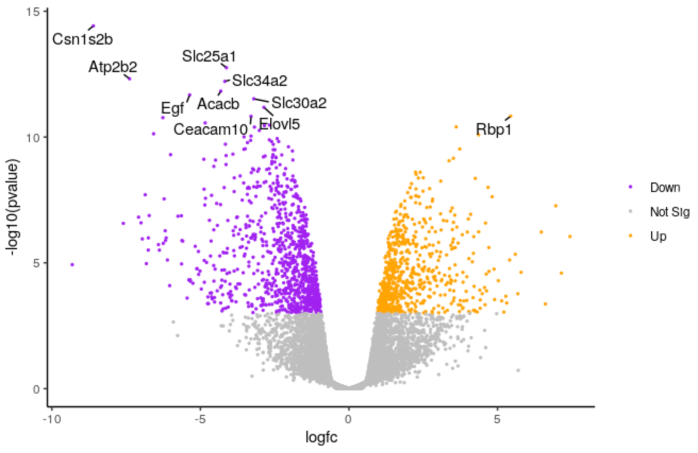
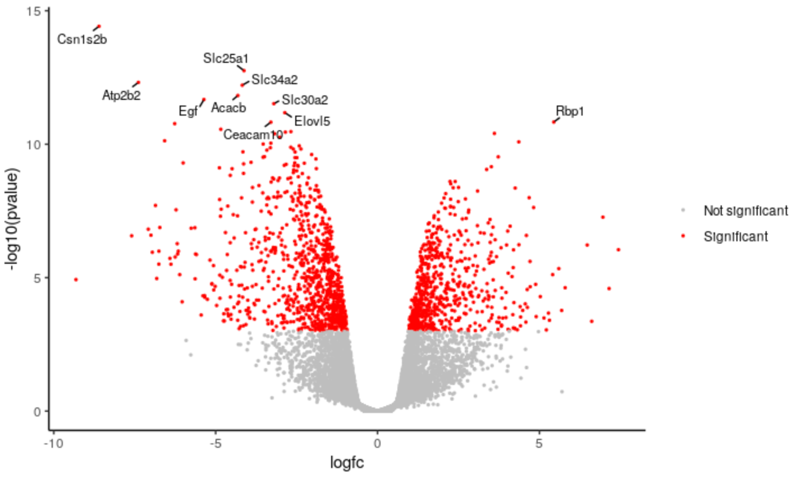

Visualization of RNA-Seq results with Volcano Plot in R
 Maria Doyle
Maria DoyleOverview
Questions:Objectives:
How to customise Volcano plot output in R?
Requirements:
Learn how to use R to edit Volcano plot colours, points, labels and categories
- Introduction to Galaxy Analyses
- Sequence analysis
- Quality Control: slides slides - tutorial hands-on
- Mapping: slides slides - tutorial hands-on
- Using Galaxy and Managing your Data
- RStudio in Galaxy: tutorial hands-on
- Foundations of Data Science
- R basics in Galaxy: tutorial hands-on
- Advanced R in Galaxy: tutorial hands-on
- Transcriptomics
- Visualization of RNA-Seq results with Volcano Plot: tutorial hands-on
- RNA Seq Counts to Viz in R: tutorial hands-on
Time estimation: 1 hourLevel: Intermediate IntermediateSupporting Materials:Last modification: Oct 7, 2021
 Questions:
Questions:
Introduction
The Volcano plot tutorial, introduced volcano plots and showed how they can be generated with the Galaxy Volcano plot tool. In this tutorial we show how you can customise a plot using the R script output from the tool.
Agenda
In this tutorial, we will deal with:
Preparing the inputs
We will use one file for this analysis:
- Differentially expressed results file (genes in rows, and 4 required columns: raw P values, adjusted P values (FDR), log fold change and gene labels).
If you are following on from the Volcano plot tutorial, you already have this file in your History so you can skip to the Create volcano plot step below.
Import data
hands_on Hands-on: Data upload
Create a new history for this exercise e.g.
Volcano plot RTip: Creating a new history
Click the new-history icon at the top of the history panel.
If the new-history is missing:
- Click on the galaxy-gear icon (History options) on the top of the history panel
- Select the option Create New from the menu
Tip: Renaming a history
- Click on Unnamed history (or the current name of the history) (Click to rename history) at the top of your history panel
- Type the new name
- Press Enter
Import the differentially results table.
To import the file, there are two options:
- Option 1: From a shared data library if available (ask your instructor)
- Option 2: From Zenodo
Tip: Importing via links
- Copy the link location
Open the Galaxy Upload Manager (galaxy-upload on the top-right of the tool panel)
- Select Paste/Fetch Data
Paste the link into the text field
Press Start
Close the window
- By default, Galaxy uses the URL as the name, so rename the files with a more useful name.
Tip: Importing data from a data library
As an alternative to uploading the data from a URL or your computer, the files may also have been made available from a shared data library:
- Go into Shared data (top panel) then Data libraries
- Navigate to the correct folder as indicated by your instructor
- Select the desired files
- Click on the To History button near the top and select as Datasets from the dropdown menu
- In the pop-up window, select the history you want to import the files to (or create a new one)
- Click on Import
You can paste the link below into the Paste/Fetch box:
https://zenodo.org/record/2529117/files/limma-voom_luminalpregnant-luminallactateCheck that the datatype is
tabular. If the datatype is nottabular, please change the file type totabular.Tip: Changing the datatype
- Click on the galaxy-pencil pencil icon for the dataset to edit its attributes
- In the central panel, click on the galaxy-chart-select-data Datatypes tab on the top
- Select
tabular- Click the Save button
Click on the galaxy-eye (eye) icon and take a look at the DE results file. It should look like below, with 8 columns.

Create volcano plot
We will create a volcano plot colouring all significant genes. We will call genes significant here if they have FDR < 0.01 and a log2 fold change of 0.58 (equivalent to a fold-change of 1.5). These were the values used in the original paper for this dataset. We will also label the top 10 most significant genes with their gene names. We will select to output the Rscript file which we will then use to edit the plot in R.
hands_on Hands-on: Create a Volcano plot
- Volcano Plot Tool: toolshed.g2.bx.psu.edu/repos/iuc/volcanoplot/volcanoplot/0.0.5 to create a volcano plot
- param-file “Specify an input file”: the de results file
- param-file “File has header?”:
Yes- param-select “FDR (adjusted P value)”:
Column 8- param-select “P value (raw)”:
Column 7- param-select “Log Fold Change”:
Column 4- param-select “Labels”:
Column 2- param-text “Significance threshold”:
0.01- param-text “LogFC threshold to colour”:
0.58- param-select “Points to label”:
Significant
- param-text “Only label top most significant”:
10- In “Output Options”:
- param-select “Output Rscript?”:
Yes
Click on the PDF file name to check that you see a plot like below.

Now we will customise the plot by editing the R code in RStudio. You can use Galaxy RStudio if available or another R such as RStudio Cloud or RStudio installed on your computer.
Import files into R
We’ll import the differentially expressed results input file and the RScript into R.
hands_on Hands-on: Using datasets from Galaxy
Note the history IDs of 1) the differentially expressed results and 2) the RScript in your Galaxy history
RStudio Tool: interactive_tool_rstudio in Galaxy provides some special functions such as
gx_getto import and export files from your history.Hands-on: Launch RStudio
Depending on which server you are using, you may be able to run RStudio directly in Galaxy. If that is not available, RStudio Cloud can be an alternative.
tip Tip: Launch RStudio in Galaxy
Currently RStudio in Galaxy is only available on UseGalaxy.eu and UseGalaxy.org
- Open the Rstudio tool tool by clicking here
- Click Execute
- The tool will start running and will stay running permanently
- Click on the “User” menu at the top and go to “Active InteractiveTools” and locate the RStudio instance you started.
tip Tip: Launch RStudio Cloud if not available on Galaxy
If RStudio is not available on the Galaxy instance:
- Register for RStudio Cloud, or login if you already have an account
- Create a new project
Copy the files we need into our workspace so we can see them in the Files pane.
file.copy(gx_get(1), "de-results.tsv") # will copy dataset number 1 from your history, use the correct ID for your differentially expressed results dataset. file.copy(gx_get(3), "volcano.R") # will copy dataset number 3 from your history, use the correct ID for your Rscript dataset.Click on
volcano.Rin the Files pane to open it in the Editor pane.
We’ll have a look at the script.
Set up script
The first few lines from # Galaxy settings start to # Galaxy settings end are settings needed to run the Volcano plot tool in Galaxy. We don’t need them to run the script in R so we will delete them. If we don’t delete the error handling line, the R session will crash if we encounter any error in the code. It’s ok as it will resume again where we were but better to not have this happen.
hands_on Hands-on: Delete unneeded lines
Delete these lines from the top of the script.
# Galaxy settings start --------------------------------------------------- # setup R error handling to go to stderr options(show.error.messages = F, error = function() {cat(geterrmessage(), file = stderr()); q("no", 1, F)}) # we need that to not crash galaxy with an UTF8 error on German LC settings. loc <- Sys.setlocale("LC_MESSAGES", "en_US.UTF-8") # Galaxy settings end -----------------------------------------------------
We’ll check if we have the packages the script needs. We can see the packages used in the lines that have library(package)
library(dplyr)
library(ggplot2)
library(ggrepel)
When we launched Galaxy RStudio there was information in the Console letting us know that some packages are pre-installed. These packages include ggplot2 and dplyr. In this Galaxy there is a yellow warning banner across the top of the script saying Package ggrepel required is not installed. Install. Don't Show Again.
So we just need to install the ggrepel package.
hands_on Hands-on: Install package
Either click on “Install” in the yellow warning banner if present, or in the Console type
install.packages('ggrepel')
We need to change the path of the differentially expressed file in the script. The path in the script is /data/dnb03/galaxy_db/files/4/6/c/dataset_46c498bc-060e-492f-9b42-51908a55e354.dat. This is a temporary location where the Galaxy Volcano plot tool copied the input file in order to use it, the file no longer exists there. Your path will be different. In the script change this path to de-results.tsv like below.
hands_on Hands-on: Run script
Change the input file path in script
# change the line results <- read.delim('/data/dnb03/galaxy_db/files/4/6/c/dataset_46c498bc-060e-492f-9b42-51908a55e354.dat', header = TRUE) # to results <- read.delim('de-results.tsv', header = TRUE)Highlight the code in the script and run
tip Tip: Highlight all code and run shortcuts
- To highlight all code type CTRL+a (or CMD+a)
- To run type CTRL+Enter (or CMD+Enter)
You should see a file called volcano_plot.pdf appear in the Files pane. Click on it to open it and you should see a plot that looks the same as the one we generated with the Volcano Plot tool in Galaxy.
We’ll delete the lines below that save the plot to a PDF file. The plots will then be produced in the Plots pane so we can more easily see the different plots we’re going to make, without having to keep opening the PDF file.
hands_on Hands-on: Produce plots in Plots pane
Delete the lines below that save the plot to a PDF file
# Open PDF graphics device pdf("volcano_plot.pdf") # keep the lines in between as they produce the plot # Close PDF graphics device dev.off()Highlight the code in the script and run
You should now see the plot produced in the Plots pane.
Customising the plot
Change points colours
We’ll demonstate how you can change the colours. We’ll change the colour of the downregulated genes from cornflowerblue to purple. We’ll change the upregulated genes from firebrick to orange.
hands_on Hands-on: Change colours
Edit the line below in the script
# change the line colours <- setNames(c("cornflowerblue", "grey", "firebrick"), c(down, notsig, up)) # to colours <- setNames(c("purple", "grey", "orange"), c(down, notsig, up))Highlight the code in the script and run

tip Tip: R colours
If you want to use other colours you can see the built-in R colours with their names in this cheatsheet.
Change points size
We’ll make the points a bit smaller. We’ll change to 0.5.
hands_on Hands-on: Change points size
Edit the line below in the script
# change the line geom_point(aes(colour = sig)) + # to geom_point(aes(colour = sig), size = 0.5) +Highlight the code in the script and run

question Question
How could we change the transparency of the points?
solution Solution
We could use
alpha =. For examplegeom_point(aes(colour = sig), alpha = 0.5)
Change labels size
We’ll make the font size of the labels a bit smaller.
hands_on Hands-on: Change labels text size
Edit the line below in the script
# change the line geom_text_repel(data = filter(results, labels != ""), aes(label = labels), # to geom_text_repel(data = filter(results, labels != ""), aes(label = labels), size = 3,Highlight the code in the script and run

question Question
How could we change the number of genes labelled from 10 to 20?
solution Solution
We could change the 10 to 20 here
top <- slice_min(results, order_by = pvalue, n = 20)
Change categories
We can change the categories of points we’re colouring in the plot. For example, instead of using separate categories for upregulated, downregulated we could just use a single category for significant.
hands_on Hands-on: Change categories
Change the category names to signif and notsignif
# change down <- unlist(strsplit('Down,Not Sig,Up', split = ","))[1] notsig <- unlist(strsplit('Down,Not Sig,Up', split = ","))[2] up <- unlist(strsplit('Down,Not Sig,Up', split = ","))[3] # to signif <- "Significant" notsignif <- "Not significant"Specify which genes are signif and notsignif
# change results <- mutate(results, sig = case_when( fdr < 0.01 & logfc > 0.58 ~ up, fdr < 0.01 & logfc < -0.58 ~ down, TRUE ~ notsig)) # to results <- mutate(results, sig = case_when( fdr < 0.01 & abs(logfc) > 0.58 ~ signif, # abs() will give us absolute values i.e. all > 0.58 and < -0.58 TRUE ~ notsignif))Specify the colours for signif and notsignif
# change colours <- setNames(c("purple", "grey", "orange"), c(down, notsig, up)) # to colours <- setNames(c("grey", "red"), c(notsignif, signif))runHighlight the code in the script and

question Question
How would you remove the legend from the plot? You can use Google.
solution Solution
If you Google
remove legend ggplot2you may find a few ways it can be done. One way isp <- p + theme(legend.position = "none")
You can save the edited script by clicking the galaxy-save icon at the top of the script in RStudio or through File > Save. You can download from Galaxy RStudio from the Files pane by ticking the box beside the script name, then More > Export > Download.
tip Tip: More plot options
If you enter values in the Volcano Plot Galaxy tool form for Plot options, such as plot title, x and y axis labels or limits, they’ll be output in the script. This is one way you could see how to customise these options in the plot.
Conclusion
In this tutorial we have seen how a volcano plot can be generated and customised using Galaxy and R. You can see some more possible customisations in the RNA Seq Counts to Viz in R tutorial and at the ggrepel website.
Key points
R can be used to customise Volcano Plot output
The RStudio interactive tool can be used to run R inside Galaxy
Frequently Asked Questions
Have questions about this tutorial? Check out the FAQ page for the Transcriptomics topic to see if your question is listed there. If not, please ask your question on the GTN Gitter Channel or the Galaxy Help ForumUseful literature
Further information, including links to documentation and original publications, regarding the tools, analysis techniques and the interpretation of results described in this tutorial can be found here.
Feedback
Did you use this material as an instructor? Feel free to give us feedback on how it went.

Citing this Tutorial
- Maria Doyle, 2021 Visualization of RNA-Seq results with Volcano Plot in R (Galaxy Training Materials). https://training.galaxyproject.org/training-material/topics/transcriptomics/tutorials/rna-seq-viz-with-volcanoplot-r/tutorial.html Online; accessed TODAY
- Batut et al., 2018 Community-Driven Data Analysis Training for Biology Cell Systems 10.1016/j.cels.2018.05.012
details BibTeX
@misc{transcriptomics-rna-seq-viz-with-volcanoplot-r, author = "Maria Doyle", title = "Visualization of RNA-Seq results with Volcano Plot in R (Galaxy Training Materials)", year = "2021", month = "10", day = "07" url = "\url{https://training.galaxyproject.org/training-material/topics/transcriptomics/tutorials/rna-seq-viz-with-volcanoplot-r/tutorial.html}", note = "[Online; accessed TODAY]" } @article{Batut_2018, doi = {10.1016/j.cels.2018.05.012}, url = {https://doi.org/10.1016%2Fj.cels.2018.05.012}, year = 2018, month = {jun}, publisher = {Elsevier {BV}}, volume = {6}, number = {6}, pages = {752--758.e1}, author = {B{\'{e}}r{\'{e}}nice Batut and Saskia Hiltemann and Andrea Bagnacani and Dannon Baker and Vivek Bhardwaj and Clemens Blank and Anthony Bretaudeau and Loraine Brillet-Gu{\'{e}}guen and Martin {\v{C}}ech and John Chilton and Dave Clements and Olivia Doppelt-Azeroual and Anika Erxleben and Mallory Ann Freeberg and Simon Gladman and Youri Hoogstrate and Hans-Rudolf Hotz and Torsten Houwaart and Pratik Jagtap and Delphine Larivi{\`{e}}re and Gildas Le Corguill{\'{e}} and Thomas Manke and Fabien Mareuil and Fidel Ram{\'{\i}}rez and Devon Ryan and Florian Christoph Sigloch and Nicola Soranzo and Joachim Wolff and Pavankumar Videm and Markus Wolfien and Aisanjiang Wubuli and Dilmurat Yusuf and James Taylor and Rolf Backofen and Anton Nekrutenko and Björn Grüning}, title = {Community-Driven Data Analysis Training for Biology}, journal = {Cell Systems} }